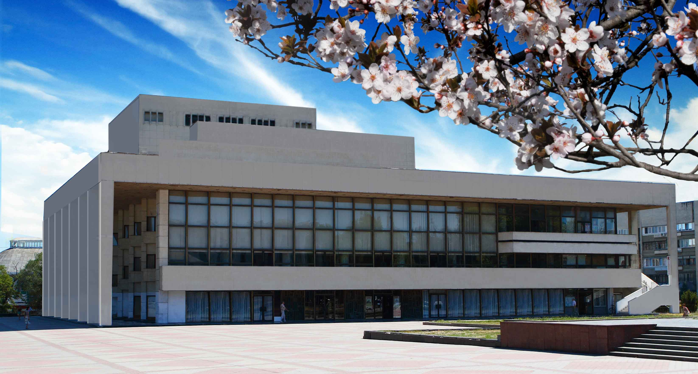

Крымский академический русский драматический театр
им. Горького
Официальный сайт: MuzTeatr.net
|  |
История театраГосударственный академический музыкальный театр Республики Крым является единственным профессиональным музыкальным театром в Республике Крым.Театр создавался в 1955 году, когда из Киева в Симферополь на постоянную работу был переведен Третий областной передвижной драматический театр. Основу новоорганизованной труппы составили артисты киевского театра. Сегодня в репертуарной палитре театра десятки произведений музыкальной классики, оперетты, рок-оперы, мюзиклы, современные спектакли, симфонические и концертные программы, балетные постановки. О достижениях и творческом потенциале коллектива говорят успешные гастроли по Крыму и России, победы в международных театральных фестивалях, устойчивый интерес зрителей. |
Адрес
Симферополь, ул. Кирова, 17